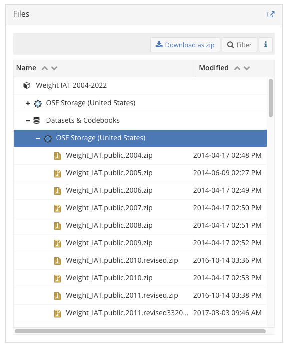
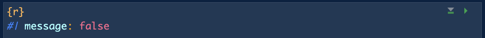

library(tidyverse)
library(gtsummary)
library(here)
if(!require(lubridate)) { install.packages("lubridate"); library(lubridate) }Lab 2 Work
BSTA 512/612
Due: Thursday February 8, 2024 at 11pm
IMPORTANT TO READ
Please do not delete the rubric from your
.qmdfile. I will use it to circle the grades!Please delete everything
Directions
Please turn in your .html file on Sakai. Please let me know if you greatly prefer to submit a physical copy.
You can download the .qmd file for this lab here.
The rest of this lab’s instructions are embedded into the lab activities.
Purpose
The main purpose of this lab is to introduce our dataset, codebook, and variables. We will continue to think about the context of our research question, but our main focus is to become familiar with the data.
Grading
This lab is graded out of 12 points. Nicky will use the following rubric to assign grades.
Rubric
| 4 points | 3 points | 2 points | 1 point | 0 points | |
|---|---|---|---|---|---|
| Formatting | Lab submitted on Sakai with .html file. Answers are written in complete sentences with no major grammatical nor spelling errors. With little editing, the answer can be incorporated into the project report. |
Lab submitted on Sakai with .html file. Answers are written in complete sentences with grammatical or spelling errors. With editing, the answer can be incorporated into the project report. |
Lab submitted on Sakai with .html file. Answers are written in complete sentences with major grammatical or spelling errors. With major editing, the answer can be incorporated into the project report. |
Lab submitted on Sakai with .html file. Answers are bulletted or do not use complete sentences. |
Lab not submitted on Sakai with .html file. |
| Code/Work | All tasks are directly followed or answered. This includes all the needed code, in code chunks, with the requested output. | All tasks are directly followed or answered. This includes all the needed code, in code chunks, with the requested output. In a few tasks, the code syntax or output is not quite right. | Some tasks are directly followed or answered. This includes all the needed code, in code chunks, with the requested output. | Some tasks are directly followed or answered.This includes all the needed code, in code chunks, with the requested output. In a few tasks, the code syntax or output is not quite right. | More than a quarter of the tasks are not completed properly. |
| Reasoning* | Answers demonstrate understanding of research context and investigation of the data. Answers are thoughtful and can be easily integrated into the final report. | Answers demonstrate understanding of research context and investigation of the data. Answers are thoughtful, but lack the clarity needed to easily integrate into the final report. | Answers demonstrate some understanding of research context and investigation of the data. Answers are fairly thoughtful, but lack connection to the research. | Answers demonstrate some understanding of research context and investigation of the data. Answers seem rushed and with minimal thought. | Answers lack understanding of research context and investigation of the data. Answers seem rushed and without thought. |
*Applies to questions with reasoning (like target population, choosing variables, revisiting research question)
Lab activities
1. Access and download the data
This serves as good practice for accessing data that is online or needs to be downloaded from a collaborator.
Data can be accessed here. Under “Weight IAT 2004-2022” there are several drop down menus:

I opened the first “Datasets & Codebooks,” then selected “OSF Storage (United States).” Once selected, the “Download as zip” option pops up in the top right part of the Files section.

We will be working with the Weight_IAT.public.2021.csv dataset. Please locate the zip file called Weight IAT.public.2021-CSV.zip . T0 download, you need to click the row of the zip file, but you can’t click the name of the zip file. If a link opens, then you clicked the name. If the row is highlighted blue and clickable “Download” and “View” buttons appear on the top right, then you selected it correctly! (See below image for what it should look like.)

Then click the “Download” button to download! Note that the name does not have an underscore between “Weight” and “IAT.” I like to have my datasets named without spaces, so I will replace the space with an underscore.
For the codebook, perform the same process for the file named: Weight_IAT_public_2021_codebook.xlsx
You will need to unzip the actual data.
Move the data to a folder that you can easily access as you work from this document. I like to have a folder named data to house my data.
Task Summary
Download the 2021 data and codebook from the archives and store in accessible folder.
2. Load data and needed packages
First, load the packages that you will need in the remainder of this lab. You can add to this as you need to. At the top of your R code chunk, you can add the following option to repress the messages from the loading packages:

Using R, load the data (csv file) into this document. Note that this is a csv file that we can load with basic R packages. Name your dataset something that feels intuitive to you and will distinguish it from other datasets that you work with.
Loading the csv file every time you render will take a long time. One way to speed this up is by saving the data as an rda file (R data file). Change the following R code to save the rda file. You will also need to remove the #| eval: false at the top of the code chunk once you have corrected the code. If you are confused on the syntax, don’t forget that you can use ?save for more information.
save(<whatever you called the read csv file>, file = "Where you would like to save the file with its name")Check that you have an rda file where you saved it. Now use load() with the file path to load the rda data here.
load(file = "Where you would like to save the file with its name")At this point, if you think you loaded the file correctly, add #| eval: false to the code chunk where you loaded the csv file and back to the chunk where you saved the rda file.
Take a glimpse at the data to make sure you loaded it correctly.
How many rows and columns are in the dataset? Do you think we will need all these variables for our analysis?
Task Summary
Read csv, save as rda, load rda, glimpse at data.
How many rows and columns are in the dataset? Do you think we will need all these variables for our analysis?
3. Data wrangling
As you go through this process, it is important that you look at the codebook for more information on each variable.
3.1 What’s our target population?
As many of you mentioned in Lab 1, individuals taking the IAT test are not necessarily representative of the world population. I want you to articulate the target population that you think our analysis can give information about. To what population can we generalize our analysis results? We can get very specific with this population, but try to restrict your population to 3-5 characteristics.
After you articulate the population, I want to add one more restriction to our population: US residency. The sample includes individuals residing in many different countries. Since we are discussing attitudes and beliefs that is inherently connected to society and culture, I think it is important that we restrict our analysis and discussion to a country that we have some social experience in. Thus, let’s restrict our data to the US only by filtering the variable countryres to category 1 (corresponding to the US).
Task
Describe our target population. Keep your description to 3-5 characteristics, not including our restriction on the US population.
3.2 Restrict your analysis to 1 outcome and 9 possible covariates/predictors
We are going to restrict our analysis to the single outcome, IAT score, which is named D_biep.Thin_Good_all. You can rename this variable.
We will also restrict our analysis to the following 9 potential variables so our work is a little more manageable.
Task
From the following 7 attitudes and beliefs, please select 3 that you think will be the most important variables related to your research question. In 1-2 lines, briefly explain why you chose each variable. This can be informal and bulleted.
(Make sure you chose the variable that is part of your research question!)
- Self-perception of weight (
iam_001) - Fat group identity (
identfat_001) - Thin group identity (
identthen_001) - Controllability of weight of others (
controlother_001) - Controllability of weight of yourself (
controlyou_001) - Awareness of societal standards (
mostpref_001) - Internalization of societal standards (
important_001)
We will start our data exploration with the following 4 demographic variables:
- Age (we need to construct)
- Race (
raceomb_002orraceombmulti) - Ethnicity
- Sex assigned at birth (
birthSex)
Please pick 2 additional variables to include in your analysis:
- Education (
edu) - Gender (
genderIdentity) - Self-reported BMI (through self-reported height and weight)
- Political identity
- Religion
I have chosen these variables for a mixture of reasons. For example, I have left out variables about residence and occupation because those variables have hundreds of categories that would be overwhelming in linear regression. For the 4 required demographic variables, I chose age because I really want us to get practice with a continuous variable. I chose race and ethnicity because of the intertwined history of racism and anti-fat bias in Western countries (including the U.S. where most participants reside).
A note of the available variables on race
The dataset has two separate race variables. One has mutually exclusive categories (raceomb_002) and the other allows participants to make multiple selections (raceombmulti). The former (raceomb_002) allows one participant to identify with only one race category.
Important lesson from We All Count about using a multiple selection race question. We can try out all these options!
Finally, I chose sex assigned at birth because adults in 2021 in the US were likely raised in a society where your sex assigned at birth impacted the gender stereotypes that you were raised in, which could impact exposure to diet culture. This in addition to the many medical conditions associated with one’s sex assigned at birth that may affect weight. The reason why I am leaving gender as an optional variable is because the question on gender allows participants to chose multiple options. The binary sex assigned at birth will make our analysis a little easier from a statistics stand point. Unfortunately, we need to balance achievable learning objectives and the most appropriate variable. Since I have required race as a variable and has a multi-level option, I do not want to overload our analysis with another multi-level variable. Sex assigned at birth will not create more work for you (that is outside of the course objectives) while capturing medical conditions and some of the societal impact of diet culture. This is certainly a limitation in our analysis that we should address in our discussion. I do encourage you to look into gender if the binary sex assigned at birth does not feel right for you. I am happy to help!
A word on self-reported BMI
This variable is rooted in racism and anti-fat bias. The American Medical Association made a few press releases on policies using BMI as a measure, with alternative measures (frankly, just other measures of fatness to use as a diagnostic tool instead of checking true indicators of health). However, I can think of a couple examples where BMI might help us understand some context in this research, so I have left it as an option. Although still self-reported, it might be interesting to see how BMI (which is the closest measurement available in this dataset to an “objective” measure of fatness) is related to individuals’ attitudes and beliefs. I am not saying there is anything to the relationship, but it might be worth checking out if you are interested.
I will also say, in this dataset, there are MANY issues constructing the variable for BMI from height and weight. If you do not feel strongly about including it, I would suggest you avoid the variable self-reported BMI. It is not worth bringing in a racist and anti-fat variable into the dataset if you do not have a specific use for it. If you do plan to use it, please come to me for help as early as possible!
If you would like to investigate a variable outside the list, please let me know by emailing or chatting with me.
Task
Using R, select your identified variables from your dataset. Your new dataset should have 10 columns for the 10 variables.
3.3 Manipulating variables that are coded as numeric variables
Many variables in this dataset are coded as numeric values, but have specific categories linking up to the numbers. Using mutate() and cases() similar to our Data Management lesson, please create a new categorical variable with the specified categories from the codebook. Make sure that you create a variable with a new name! Since some of these variables are ordered categories, we will investigate if it’s appropriate to use the numeric or categorical version of the variable.
Example of how I would create new variable for self-perception of weight (
iam_001):
By looking at the codebook, I see that respondents answer the following question: “Currently, I am:”
- “Very underweight”
- “Moderately underweight”
- “Slightly underweight”
- “Neither underweight nor underweight”
- “Slightly overweight”
- “Moderately overweight”
- “Very overweight”
If I look at the data as is, I see that the variable is numeric.
iat_2021 %>%
dplyr::select(iam_001) %>%
tbl_summary()| Characteristic | N = 465,8861 |
|---|---|
| iam_001 | |
| 1 | 2,023 (0.6%) |
| 2 | 7,902 (2.4%) |
| 3 | 24,399 (7.3%) |
| 4 | 148,081 (44%) |
| 5 | 88,566 (27%) |
| 6 | 43,090 (13%) |
| 7 | 18,978 (5.7%) |
| Unknown | 132,847 |
| 1 n (%) | |
Again, I want to create a varaible with the answers instead of numbers, so I will change transform the variable to include the text:
iat_2021 = iat_2021 %>%
mutate(iam_001_f = case_match(iam_001,
7 ~ "Very overweight",
6 ~ "Moderately overweight",
5 ~ "Slightly overweight",
4 ~ "Neither underweight nor underweight",
3 ~ "Slightly underweight",
2 ~ "Moderately underweight",
1 ~ "Very underweight",
.default = NA # to add NA if unknown
))I have called the new variable iam_001_f to indicate that the variable is not in factor form. You can also call it something like iam_001_cat to indicate the categorical form.
Task
Identify and list the variables that are coded numerically and correspond to categories. Create a new variable for the categorical/factor version of the variable. It is up to you to check that your code ran properly!! If you are using multi-choice categorical variables (might include race, gender), then do not convert the variable yet!
3.4 Creating age from birth date and test date
This dataset does not have an available “age” variable. However, we have enough information to determine each individual’s age from the test date and their self-reported birth date. We can use the lubridate package to configure the age. First, we need to use make_date() to construct the birth date and test date. Below, I have implemented make_date() to make the birth date.
Task
From the codebook, find the variables that we can use to construct the test date. Then use make_date() to create the test date.
iat_2021 = iat_2021 %>%
mutate(birthdate = make_date(month = birthmonth, year = birthyear),
testdate = make_date(month = month, year = year))Once the two dates are created, we can use further use lubridate to calculate the age in years. This code is a little complicated, so here is an example of how I have created age:
iat_2021 = iat_2021 %>%
mutate(age = interval(start = birthdate, end = testdate) %>%
as.period() %>% year()) %>%
select(-birthmonth, -birthyear, -year, -month,
-testdate, -birthdate)Note that the name of my dataset is iat_2021 and I feed it into mutate(). Within mutate(), I assigned age to the interval between the name of my birth date (birthdate) and the name of my test date (testdate). I need to convert the interval to a period of time (as.period()), then to a measurement of years (year()).
Task
Following the above example, create an age variable that measures the years between individuals’ birth and test date. Then remove the variables used to make age.
3.5 If you chose BMI, create the variable
Raw data from weight and height are categorical. This is according to the codebook associated with this dataset. Please find your codebook file named Weight_IAT_public_2021_codebook.csv . You can find the value names for myweight_002 and myheight_002.
For example, in the weight variable,
most categories identify a lower limit to the weight in the group. One example group is weight is greater than or equal to 200 pounds and less than 205 pounds (labelled as “200 lb :: 91 kg”).
the first category for weight is “below 50lb:: 23kg” with 258 observations
the last category for weight is “above 440lb:: above 200kg” with 295 observations
- While the 5 groups of weight leading up the last category have 33, 28, 34, 20, and 89 observations, respectively.
I will post an extra resource outlining some of my work on the BMI variable.
3.6 Make a new dataset with only complete cases
Handling missing data is outside the scope of our class. There are many techniques to handling missing data, but we will use complete case analysis. This means we will only use observations that have information for every variable we chose. The function drop_na() will give you the complete cases. You can feed your dataset into the function and assign it as a new dataframe.
For example:
new_df = old_df %>% drop_na()4. Some exploratory data analysis
4.1 Peek at your outcome
This serves as a check to make sure we are all looking at the correct outcome: IAT score.
Task
Please plot a histogram of the IAT scores. What do you notice about the outcome?
4.2 Univariate exploratory data analysis
Task
Using ggplot or tables, visualize your variables. Get a sense of each variable’s distribution. Do you notice anything out of the ordinary?
4.3 Bivariate exploratory data analysis
Task
Take a look at the scatterplot, violin, or box plot of IAT score and your variable of interest. Use R and ggplot to make this plot. If your variable of interest is categorical, then make sure to use a violin or boxplot.
5. Revisit your research question
Task
Please restate the research question that you proposed in Lab 1. What are your thoughts on the research question now that we looked at the data? Feel free to change it now that we’ve looked at the data. If you change your question, make sure 4.2 reflects the new research question.
Note
In research, we typically do NOT change our research question after looking at the data! Researchers typically form their questions from other research and their expertise. We may not have expertise in this field and we have not been studying implicit bias, so I want to be a little more flexible with our analysis.